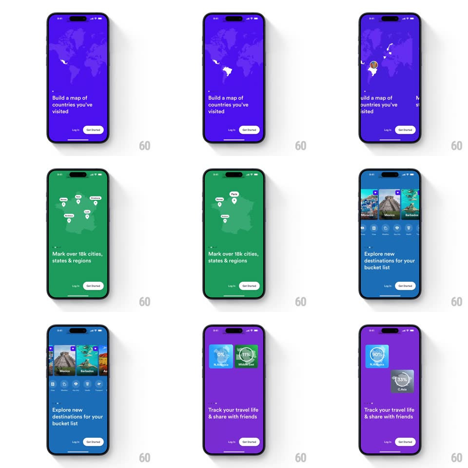

Media
Frame-by-frame

Rebuild this animation 1:1: Skratch's onboarding slides - over a saturated purple screen with a faint world map, countries light up and pins drop as the value props cycle, with Log In / Get Started pinned at the bottom.

Rebuild this animation 1:1: Skratch's onboarding slides - over a saturated purple screen with a faint world map, countries light up and pins drop as the value props cycle, with Log In / Get Started pinned at the bottom.
## Integration
Integration: stack-agnostic spec - springs given as stiffness/damping, timed motions as duration + curve; map every value to your framework and animation library of choice.
## Scene
A vivid purple screen. Splash: the striped-circle Skratch logo at center. Onboarding: a faint dotted world map fills the upper two-thirds, white headline bottom-left ("Build a map of countries you've visited"), with Log In (text) and Get Started (white pill) at the bottom. Countries highlight and map pins drop as slides advance.
## Motion spec
Pattern: map-highlight slide show.
- Splash (0-900ms): the logo draws in (stripes wipe, 500ms) and settles with a soft scale (spring ~380/22); the purple background is constant from the first frame.
- Map fade-up (900-1400ms): the dotted world map fades in (opacity 0 to 12%, 500ms) and drifts slowly westward (translateX loop, 60s per cycle).
- Headline and buttons stagger up (translateY 16px, 300ms, 90ms apart).
- Country highlights: as each slide's copy changes (crossfade 250ms), a country on the map fills white (opacity 0 to 90%, 350ms) with a soft glow, then a pin drops onto it (translateY -30px to 0 with a bounce, spring ~380/18, plus a tiny map ripple ring at impact, 400ms).
- Pins accumulate across slides (earlier pins shrink to dots, 200ms); the map pans gently to keep each new highlight in view (300ms ease-in-out).
- Progress: small dots or a thin ring near the headline advances per slide.
## Calibration
- The purple is fully saturated and constant; map, type, pins are all white tints - no second hue.
- Map motion is always slow; only pins and highlights move quickly.
## Reduced motion
Slides crossfade; countries appear without pin drops.
## Don't miss
- Get Started is a solid white pill with purple text; Log In is bare text - the hierarchy is explicit.
- The logo's stripes are diagonal and hand-drawn-feeling, not a geometric pinwheel.